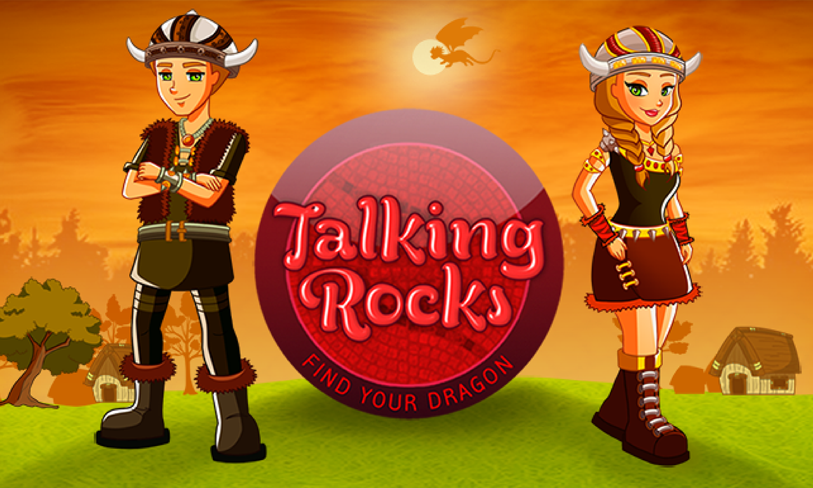
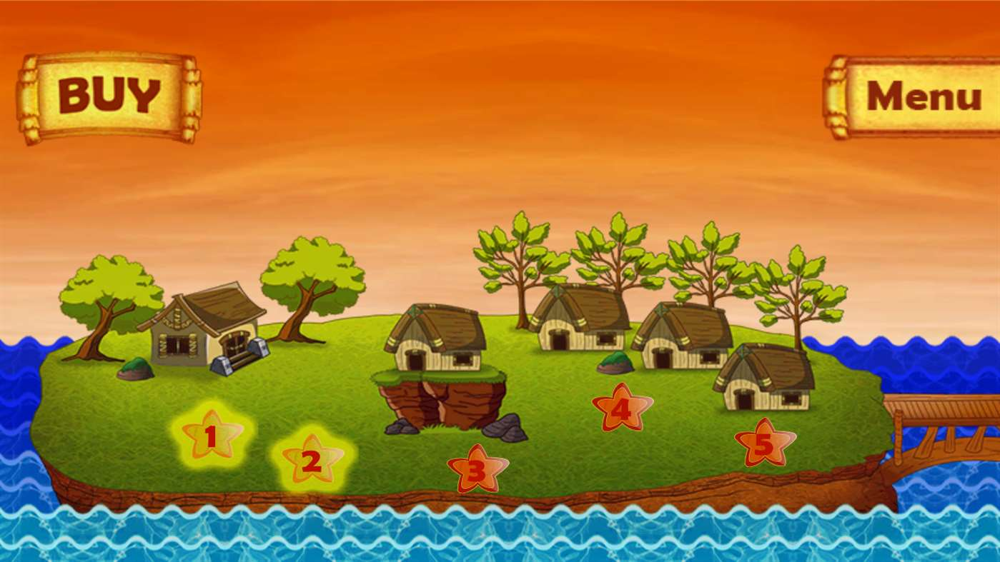
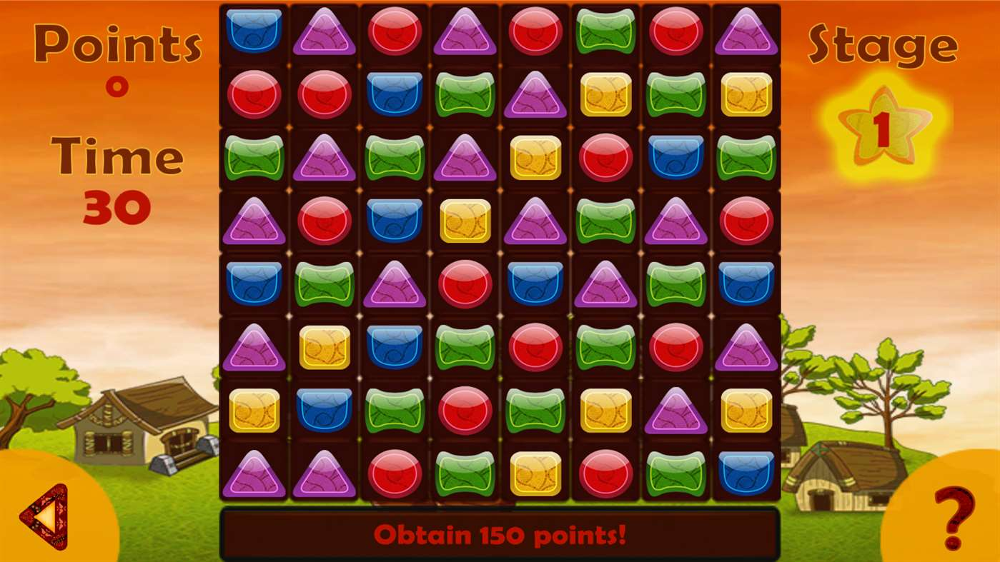
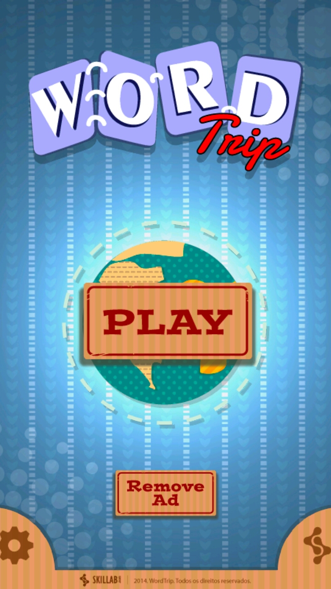
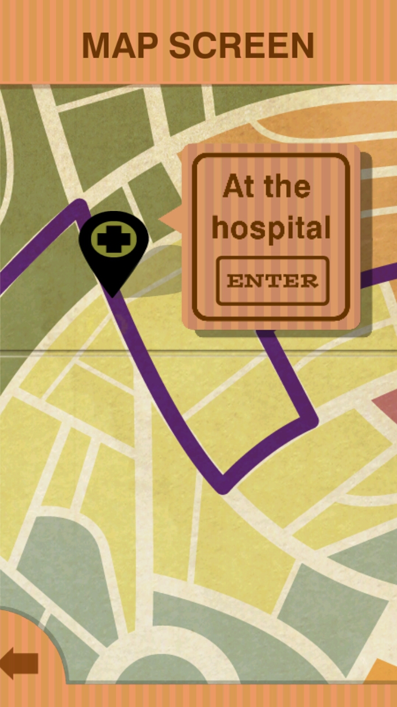
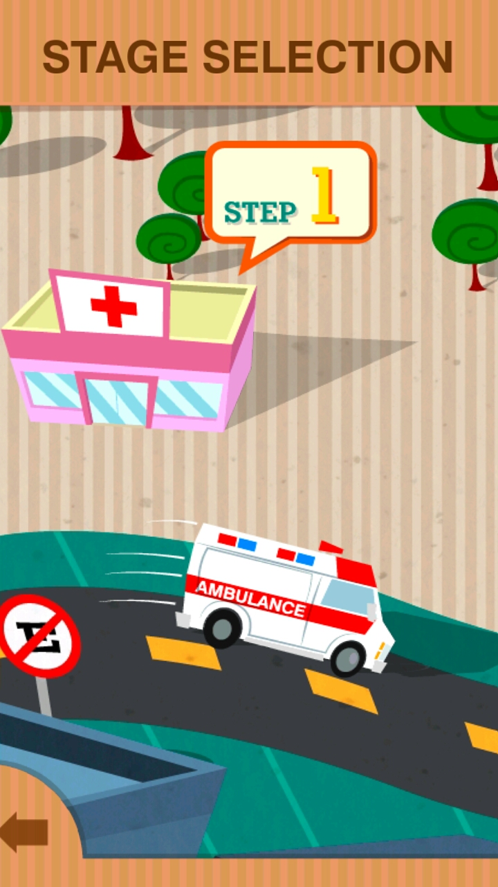
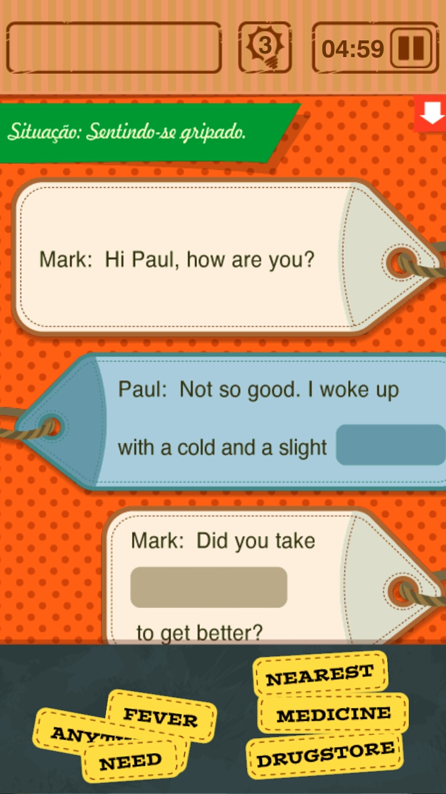

What is this
Hello, if you are reading this website it is probably because I want to work with you. This site showcases my recent game development work using Unity 3D, from the last 3 years.
Well, who are you?
My name is Emanuel Tavares, I'm a Unity 3D game developer from Brazil. I have been working with Unity since 2012.
Let's see what you can do
Here they are:
Talking Rocks
My first actual job in game development was in Skillab. Up to that point I was developing research projects with Unity 3D and never had finished a game. Skillab acquired another company which made games in XNA and their plan was to migrate everything to Unity and launch in every store possible. However, they also wanted to create a new game from the ground and they assigned me to develop it. After six months, Talking Rocks was born.
Talking Rocks is Candy Crush with a vikings motiff, there's no better way to explain. Players are supposed to beat each stage of all the islands, in order. In a stage you play a "Candy Crush" minigame where you have to obtain a certain number of points to complete that section. After that you need to complete an educational minigame about english words. Only after that, the stage ends. Completing every stage in an island grants you a special shield. When all shields are obtained, you win a Magic Shield, a dragon, a very long scroll and the game ends.

The game features 25 levels with six types of educational minigames. It uses very few plugins, as far as I can recall, I implemented only the Prime31 billing plugins. The majority of the code in the game was developed by me. However there were a few instances where other people contributed:
- One of the minigames was not developed by me.
- I needed a lot of help with other platforms, specially iOS and Windows. I never forgot that one of my colleagues developed a virtual keyboard for Talking Rocks so it could be approved in the Microsoft Store.
- After I left the company, the game went through a few changes. It became free to play with ads. Before that, you could play until the end of the first island and the game asked you to pay to get access to the rest.

Overall, the game was a great experience for me, it was my first professional project. It gave me the opportunity to learn a lot about team communication, work behaviour, plugins, coding styles, version control (we used subversion) and Unity 3D, of course. The game can be played in the following platforms: Android, iOS and Microsoft Store.
Word Trip
This was the second game I developed in Skillab. I don't know how long it took to complete, I left the company when the game was very close to being finished. I worked in it for three months.

The game is a series of minigames scattered in a city presented in a bird's eye view. There were five main areas filled with stages. Each stage was a minigame related to english words, similarly to Talking Rocks. As far as I can remember, there were three types of minigames in it.

I didn't code close to everything this time. After the project hit the two-month mark, Skillab hired a junior programmer to help me. I trained him as best as I could and gave him a lot of annoying tasks that I didn't want to do in the game. Summarizing, he coded two types of minigames, I coded the rest and the glue that kept the stages together in a logical way. The game became free to play with ads after I left. Besides that, I couldn't find any other differences in the game. Even a few bugs that I didn't fix were still there.

One of the most satisfying things about working in this project was to notice how much I had learned after working in Talking Rocks. Word Trip feels a lot more alive and animated than Talking Rocks, specially because I had a lot more leniency about what I could do in the game scenes. I polished them until my hands bled. Working with someone else was very interesting, having somebody to watch your back and exchange ideas about the project made a lot of difference for me. Usually, people don't like training others; this is the only experience that I had and it was great. Maybe I was lucky.

The game can be played in the following platforms: Android and iOS.